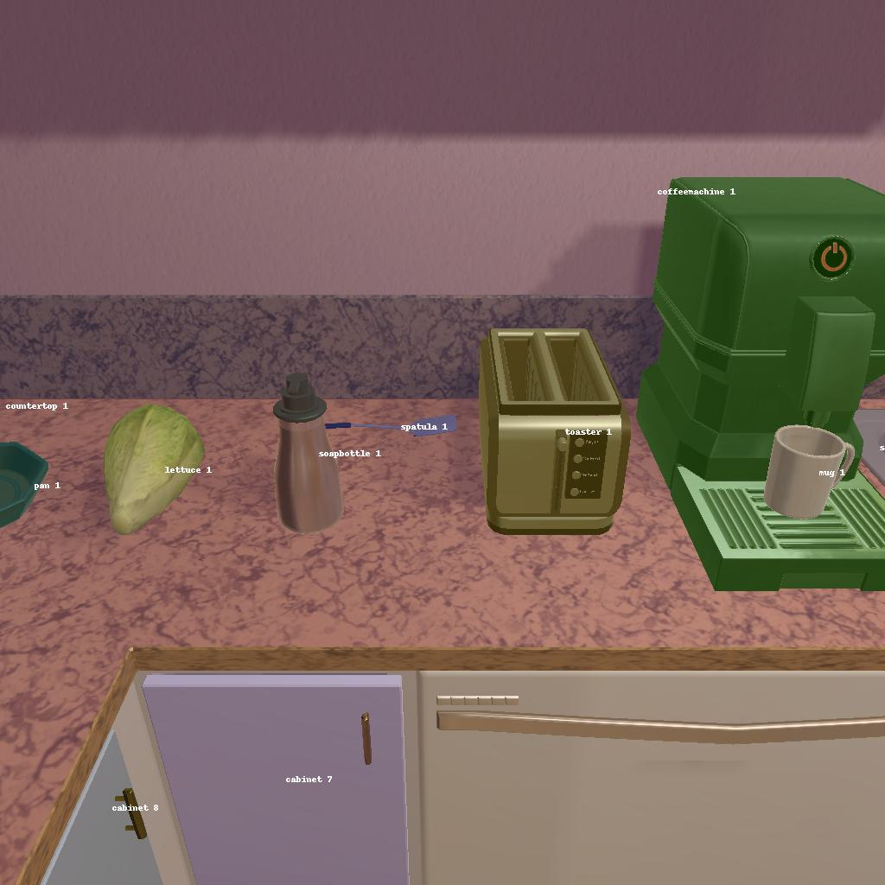

---------------------------------------------------------task: 18---------------------------------------------------------
--------------------------------------------------------------------------------------------------------------------------------------------------------------------
--------------------------------------------------------------------------------------------------------------------------------------------------------------------
Step:--------------------------------------------------------------------------6-------------------------------------------------------------------------------
----------------------------------------
VLM Prompt:
Image1:
**Instruction**
1. Analyze the provided image to identify all visible household objects, focusing on those relevant to the task description "cool some pot and put it in cabinet."
2. Use the analysis of the image and the task hint "The agent must find an object of the desired type, pick it up, go to a fridge, cool the object with the fridge, then find the correct location to place it, and put it down there. The agent does not need to use the fridge button or open the fridge to cool the object, and the agent just needs to do action that is "cool the object with the fridge"." to answer the question: what is the most reasonable action in the choices for the task description "cool some pot and put it in cabinet"?
4. Decide and write the answer using the template: The answer is: (i): , where i is the real number. If there is no desired object in the image, search every place based on **Initial Observation** to find the object. And if no one is exactly correct, choose a similar answer.
**Initial Observation**
You are in the middle of a room. Looking quickly around you, you can see cabinet (1-20), countertop (1-3), coffeemachine (1), toaster (1), sink (1), fridge (1), microwave (1), garbagecan (1), drawer (1-3), sinkbasin (1), stoveburner (1-4), shelf (1-3)
**Answer Choices**
(1): go to cabinet 1
(2): go to cabinet 2
(3): go to cabinet 3
(4): go to cabinet 4
(5): go to cabinet 5
(6): go to cabinet 6
(7): go to coffeemachine 1
(8): go to cabinet 7
(9): go to toaster 1
(10): go to cabinet 8
(11): go to sink 1
(12): go to microwave 1
(13): go to garbagecan 1
(14): go to cabinet 9
(15): go to cabinet 10
(16): go to countertop 2
(17): go to cabinet 11
(18): go to cabinet 12
(19): go to drawer 1
(20): go to countertop 3
(21): go to drawer 2
(22): go to cabinet 13
(23): go to sinkbasin 1
(24): go to cabinet 14
(25): go to drawer 3
(26): go to stoveburner 1
(27): go to stoveburner 2
(28): go to stoveburner 3
(29): go to cabinet 15
(30): go to stoveburner 4
(31): go to cabinet 16
(32): go to cabinet 17
(33): go to cabinet 18
(34): go to cabinet 19
(35): go to cabinet 20
(36): go to shelf 1
(37): go to shelf 2
(38): go to shelf 3
(39): take lettuce 1 from countertop 1
(40): take soapbottle 1 from countertop 1
(41): take mug 1 from countertop 1
(42): take pan 1 from countertop 1
(43): take spatul1 from countertop 1
(44): examine countertop 1
**Answer**
Let's think step by step by following the instructions.
----------------------------------------
----------------------------------------
Original Response:
The task is to "cool some pot and put it in cabinet." Looking at the image, we can see a pan labeled "pan 1" on "countertop 1," which is likely the object we need to cool down. There is no pot visible in the image, but a pan is similar in context and could be what is meant by "pot" in the task description. The image does not show a fridge, so we cannot visualize the cooling process, but we can infer that it is part of the environment based on the "Initial Observation." The task does not require interacting with the fridge's mechanism, so we can skip that part.
The next step is to put the cooled object in a cabinet. We can see two cabinets labeled "cabinet 6" and "cabinet 7" in the image. Since the task description does not specify which cabinet to use, we can choose either of these visible options.
Based on the analysis, the most reasonable action from the choices given would be to first take the pan, cool it with the fridge (even though the action is not explicitly listed), and then go to one of the visible cabinets to put it away.
The answer is: (42): take pan 1 from countertop 1. Then, cool it with the fridge (implied action), and finally, go to either (6): go to cabinet 6 or (8): go to cabinet 7 to complete the task. Since we need to select one action, we'll choose the action to take the pan first.
The answer is: (42): take pan 1 from countertop 1.
----------------------------------------
----------------------------------------
>>> Refine Original VLM Response and Get Pure Action: take pan 1 from countertop 1
----------------------------------------
-----------------------------------------------------------------
Running time: 18.669147491455078 seconds
Total Money: 6.232790000000003
-----------------------------------------------------------------
-----------------------------------------------------------------
Text Observation:You pick up the pan 1 from the countertop 1.
-----------------------------------------------------------------
UNSUCCEED